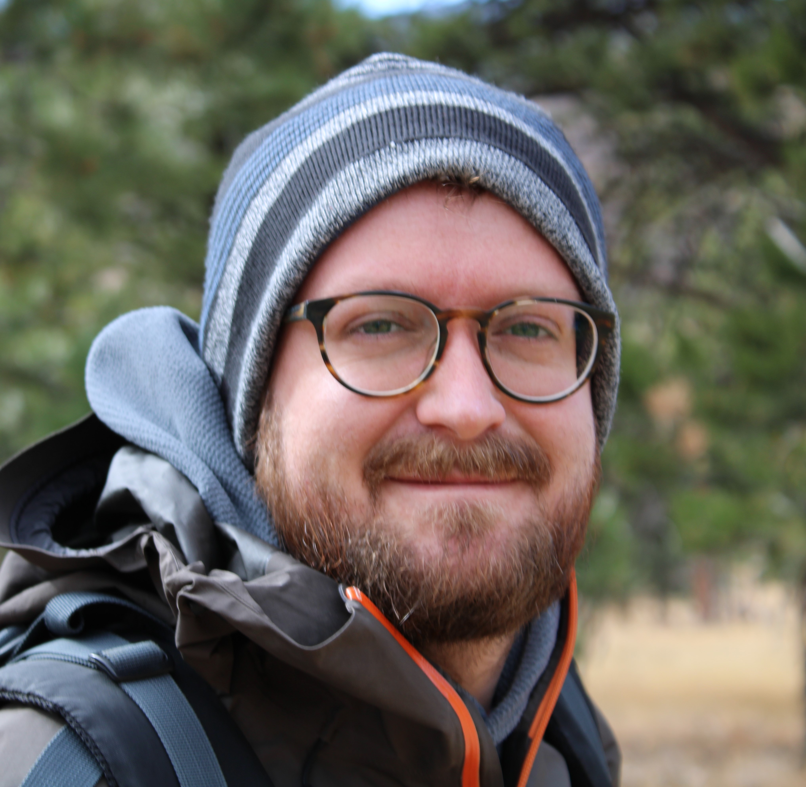

Nicholas Landry
 I’m an Assistant Professor of Biology at the University of Virginia (as well as a courtesy faculty member in the School of Data Science) and I lead an interdisciplinary lab studying how networks and groups (higher-order interactions) affect the spread of diseases, information, and opinions. I use tools from network science, mathematical modeling, Bayesian inference, and open-source software.
My portfolio is a collection of some projects that I’ve worked on personally, professionally, and academically. For more about me, see my bio, CV, or list of publications. You can also take a look at my blog.
Research Interests
- The structure and dynamics of complex systems (particularly those involving higher-order interactions)
- Contagion spread (disease, opinions, etc.)
- Inference of network structure
- Open software
Recent News
- May 2025: I will be teaching “A Practical Guide to Modeling with Higher-order Networks” with Laurent Hébert-Dufresne as a minitutorial at the SIAM Conference on Applications of Dynamical Systems (DS25) in Denver, CO! I will also be giving a talk on “Opinion disparity in hypergraphs with community structure: theory and practice”.
- April 2025: I was an invited panelist at the Social Contagions, Artificial Intelligence, and Democracy Workshop at UVA.
- March 2025: I presented our paper “Governance as a complex, networked, democratic, satisfiability problem” at the APS Global Physics Summit in Anaheim, CA.
- March 2025: I gave a talk at the Bryn Mawr Bi-Co Math Colloquium.
- February 2025: I gave the UVA Statistics Colloquium talk about network reconstruction from data.
- January 2024: I became a courtesy faculty member in the School of Data Science! This will foster many exciting cross-school collaborations.
- December 2024: New preprint on the structure of effective governance is now posted!
- November 2024: I gave a talk in the Statistics Department at Grinnell College.
- October 2024: I chatted with the Quantum Photonics Club on Clubhouse about my work on “Reconstructing networks from simple and complex contagions”. Listen to it here.
- October 2024: I gave a talk at the “Spreading on social networks – theory and applications” workshop at Rutgers University. Here are photos of my talk and the group photo.
- October 2024: “Reconstructing networks from simple and complex contagions” has been published as a letter in Physical Review E!
- August 2024: Two new preprints were posted: one presenting a theoretical model of a physical reservoir computer and the other presenting a new method for efficiently and accurately simulating diffusion processes with a high degree of stochasticity.
- August 2024: I started as an Assistant Professor of Biology at the University of Virginia!
- July 2024: I moved from Burlington, VT to Charlottesville, VA!
- June 2024: I was at NetSci in Quebec City and talked about my recent work on network reconstruction and about XGI at the Software Tools for Network Science satellite. My talk on network reconstruction won the Zachary’s Karate Club Trophy. Here are photos of my talk referencing the ZKC network and of the trophy presentation.
- May 2024: Yifei (Bell) Luo, an undergraduate at Middlebury College, co-mentored by Phil Chodrow and me, presented his undergraduate thesis titled “Efficient sampling of configuration model random hypergraphs”! Very proud of him!
{kind=link}
{kind=link}
{kind=link}
{kind=link}